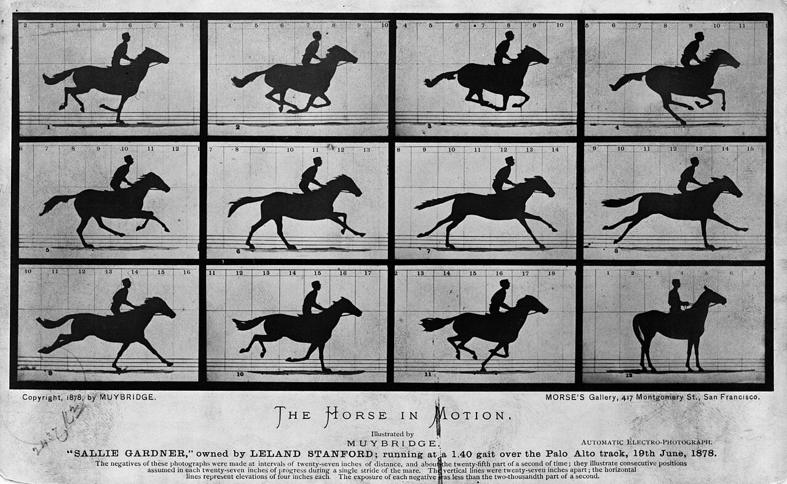

摄影 · 第 3 讲
光圈决定光有多少，快门决定光来多久。而「多久」这两个字，直接决定了一件事：画面里的动作，是被切下来，还是流过去。这一讲只教你选这一个数。
曝光三角 · 第二只旋钮 · ← 上一讲 · 光圈与景深 · 下一讲 · ISO 与噪点 →
先看一张照片。

注意这件事的顺序：相机先把那一瞬间拍出来，人才学会在奔跑的马身上「看见」它。 在那之前不是没人盯着马看，而是人眼跟不上——四蹄同时离地只有几十毫秒，眼睛直接把它糊掉了。 快门第一次替人类看见了自己看不见的时间。
这一讲就把这段时间拿到你手上。它没有别的作用，只回答一个问题： 从按下快门到关上，让光进来多久？——而这个「多久」，正是画面里所有动作的命运。
上一讲讲的是光圈：孔开多大，决定单位时间里进多少光。快门管的是另一半——让光进来多久。 快门帘打开的那段时间里，落在传感器上的所有光都会被加起来，最后写成一张照片。
所以一张照片从来不是「一个瞬间」，而是一段时间。1/500 s 就是 2 毫秒，
比一次眨眼（大约 100 毫秒）短五十倍；而 1/4 s 比一次眨眼还长两倍多。
你在照片上看到的，是这段时间里发生的全部事情的叠加——包括你不想要的那些。
快门时间序列（每相邻一格，进光量正好差一倍，和第 1 讲那张表完全一样）：
1/1000 · 1/500 · 1/250 · 1/125 · 1/60 · 1/30 · 1/15 · 1/8 · 1/4 · 1/2 · 1"。
往左一格，时间减半、画面暗一半；往右一格，时间翻倍、画面亮一倍。
1" 表示一整秒，2"、4" 就继续往慢里数。
记住这条规律，也就记住了最重要的一件事：换快门从来不是免费的——
你不是在调亮度，而是在拿亮度换运动的样子。
1/1000 s 下是一根一根清楚的腿，在 1/15 s 下就变成一团影子——
主体没变，变的是你留给它的时间。
最下面那行最容易被忽略：即使被拍的东西完全不动，你的手一直在动，
所以慢到某个程度，画面会自己糊掉——这就是下一节要讲的安全快门。
把上面这张图收成一句话，快门其实只有两个方向：凝固，或者留痕。 剩下全是细节。
1/500 – 1/1000 s。1/2 s – 15 s。那具体怎么选？判断依据只有两条，缺一不可：主体动得多快， 以及你的相机要怎么走（站住不动、跟着主体转，还是干脆架起来让它自己曝）。 第一条决定「多快才够」，第二条决定「能不能慢」。
1/500 s，快门只打开 2 毫秒，动作被切成薄片，每一片都清楚；
右图用的是 1/4 s，快门一直开着，八个位置的身影全叠在同一张照片上，
越早的位置越淡——时间本身被拍进去了。
两张都不算错，它们只是回答了不同的问题。你按下快门之前要想清楚：这一张，我要哪一个？
慢下来之前，先得知道你手里的相机能撑多久。老规矩叫安全快门：
手持时，快门时间不要慢于 1/焦距。焦距 50 毫米就用 1/50 s 左右，
焦距 200 毫米就要 1/200 s——镜头越长，同样的手抖在画面里被放得越大。
这条经验在 Ken Rockwell 的技术栏目
里被反复强调，他讲得直白：糊掉的照片没有任何后期能救。
但 Pocket 4 要另算。它有三轴机械云台：镜头和传感器被真的架在一个会自己找平的支架上，
所以你边走边拍画面也稳——对它，「手持不低于 1/30 s」基本不适用，静止取景可以更慢。
可是云台只消抖动，不消移动：它救得了手抖，救不了你整个人在往前走。
快门一拉到几秒，云台也救不了——那已经不是「稳不稳」，而是「相机在不在原地」。
真的拍 4 s 长曝光，还是要架稳：扶手、桌沿、地面都算数。
Air 那边相反，只有电子防抖加算法。它主摄 26 毫米，按公式 1/26 s 就该稳；
可它是伸着手臂、单手拿着拍的，支点比贴着眼睛的相机差得多，所以实用上把线画在 1/60 s：
1/125 s 或更快——两台机都怎么拿都稳，拍静物和风景停在这里。1/60 s——Air 的安全线，别再一边走一边拍。Pocket 4 有云台，这一档很宽松。1/30 s——Air 要用持机姿势换：稳住呼吸、夹紧手肘、双手握机，按下时「压」而不是点。Pocket 4 省了这项。1/15 s 或更慢——两台机都别靠肌肉硬撑，去找支撑面：栏杆、桌面、墙壁、柱子。对两台机都成立的一句：防抖只抵消相机的抖动，救不了移动的主体。 机械云台也好、算法也好，都只能让静止的夜景更清楚，绝不能让跑过去的小孩变清楚——那件事只有快门能做。
一旦你愿意把相机架住，快门就变成了另一件工具。同样是「时间长」，它能把日常场景改写成四种样子：
4 s）。1/2 s 到 2 秒，瀑布和溪流里每一滴水都糊在一起，变成白绸子。那这四件事你手上怎么做？差别很硬：只有 Pocket 4 能真的手选快门——在它的拍照设置里，
快门铺到 1/8000 s – 4 s。iPhone Air 没有这个开关，它的「几秒长曝光」是夜间模式
连拍多张再叠出来的合成结果，不是真的把快门开着。你要的 4 秒长曝光，只有 Pocket 4 做得到——
这是第 9 讲两台机分工里最硬的一条差别。
做法分两步。第一步两台机一样：先把相机固定住。固定不一定靠三脚架——Pocket 4 靠在栏杆、 桌面、窗台或背包上就够，真要更久再配夹子加三脚架。第二步只在 Pocket 4 上成立：在拍照设置里把 ISO 压到最低， 再把快门往慢里调，直到亮度合适。Air 没有快门可调，想拍水流的丝滑感只能借夜间模式合成，且别指望动的东西清楚。 关于长曝光的各类拍法，Photography Life 上有不少成体系的实例，值得对着看。
Air「夜景模式」的真相，一句话：它不是一次长曝光，而是快速拍很多张、 再对齐叠加成一张。所以能手持拍，因为每张都很短；但也因为每张里主体都要对齐， 主体一动就会糊——你端得再稳，走过的路人还是虚的。想拍会动的东西， 换到 Pocket 4，在拍照设置里把快门拉长、把相机架稳。Air 的人像、夜景、HDR 都走这种算法合成的路子。
两台机各能做的「动作」：
1080p 120/240 fps；人像与夜景靠算法合成，一键就出。但它不能手选快门，凝固与留痕之间那个旋钮，在你手里是空的。4K/240fps 慢动作；还有间隔拍摄（官方规格：关 / 0.5 / 1 / 2 / 3 / 5 / 10 秒），能把很慢的变化压成几十秒；旋开屏幕、用五向摇杆转云台，就能跟住一个在动的人。到这里必须打破一个默认假设：清楚不等于好。 水流、人群、舞者，常常是「留痕」比「凝固」更好看——因为照片要说的事，本来就是 「水在流」「人在动」「这一秒在走」。一张把瀑布冻成冰柱的照片虽然技术漂亮， 却可能把瀑布最动人的部分（它在流动）删掉了。
所以真正的决定权在你，不在相机：先决定这张照片要让观者「看清一个动作」， 还是「感到一段时间」，再去拧快门。自动模式永远替你做的是前者， 它默认「清楚 = 正确」——这就是为什么想拍出留痕，你必须自己动手。
| 你想拍的东西 | 建议快门区间 | 注意事项 |
|---|---|---|
| 站着的人、静物、风景 | 1/125 – 1/250 s | 手持别慢于 1/60 s；光不够就先抬 ISO，别贪慢 |
| 散步的人 | 1/250 s | 手脚一直在动，1/125 s 常会留下一点点糊 |
| 跑步的人、小孩、宠物 | 1/500 – 1/1000 s | 进光量掉得飞快，宁可开大光圈、抬 ISO 来补 |
| 横穿画面的汽车、自行车 | 1/1000 s 或更快 | 侧面横穿最难；迎面而来相对好拍 |
| 舞台上的舞者 | 1/250 s 定格，或 1/15 s 留痕 | 先用上面那节想清楚要哪一种，中间值最容易两头不讨好 |
| 瀑布、溪流 | 1/2 – 2 s（丝滑）或 1/250 s（水花清楚） | 长的必须架稳；白天光太亮，往往还要减光镜才慢得下来 |
| 夜晚的车流（车灯拉线） | 2 – 15 s | 必须架稳，ISO 压到最低，手持没戏 |
| 光绘、星轨 | 10 s 到几分钟 | 三脚架加最低 ISO；同时要会算电量 |
一句可带走的规则：按快门之前先问自己—— 这张照片里，我要凝固谁，又要留下谁的痕迹？ 问完再拿快门去换：要凝固，就把时间往短里买，用光圈和 ISO 付钱； 要留痕，就把时间往长里买，用支撑和耐心付钱。 快门只回答这一个问题，也只需要你回答这一个问题。
练习（十五分钟）：找一个会规律移动的东西——走路的家人、跑过的小孩、 阳台上被风吹的叶子、水龙头下的水流都行。其余设置尽量不变，只改快门，拍五张。
1/1000 s——是不是每一根腿都清清楚楚？画面有没有变暗？1/250 s——多数情况下，这一张就是「安全又好看」的日常值。1/60 s——看边缘，是不是开始有一点点毛？1/15 s——把手肘夹紧、稳住呼吸再按。这回是动作在糊，还是整个画面在糊？1" 或更慢，靠在栏杆或桌沿上拍。Air 没有快门可调，这一张只能交给 Pocket 4。然后把五张并排看，回答一个问题：哪一张最接近你当时眼睛看到的感觉？ 通常不是你猜的那一张。把这个答案记住，比背下所有档位有用得多。
1. 什么叫「安全快门」？为什么它对 Pocket 4 基本不适用，对 iPhone Air 却仍要画在 1/60 s？
安全快门是手持时的经验下限：快门不要慢于 1/焦距，焦距越长，同样的手抖被放得越大。Pocket 4 的镜头由三轴机械云台架着，走路拍也稳，所以这条基本不适用；但云台只消抖动、不消移动，快门拉到几秒时同样救不了，仍要把机器架在扶手或桌面上。Air 主摄 26 毫米，按公式 1/26 s 就该稳，可它伸着手臂、单手拿，支点差，只有电子防抖加算法，所以线画在 1/60 s；而且防抖只抵消相机抖动，救不了移动的主体。
2. 傍晚站在天桥上，想拍车灯拉成的光带。快门往哪边调？代价是什么，怎么补？
往长里调：2 – 15 s。代价有三个：进光量涨得很快（画面会过曝，要把 ISO 压到最低，白天甚至需要减光镜）、时间越长越必须把相机架稳（栏杆、桌面或三脚架）、以及这段曝光的全部时间都会被叠进画面（有东西走过就留痕）。光带的长度也正是这么来的——车在这几秒里走了多远，光带就有多长。这件事只有 Pocket 4 能做：它快门能到 4 s，Air 没有手选快门。
3. iPhone Air 的「夜景模式」是一次长时间曝光吗？为什么手持也能用，又为什么主体一动就糊？
不是。夜景模式是快速拍很多张短曝光，再把它们对齐叠加起来。每张都很短，所以手持也站得住——它把「一次长曝光」拆成了许多次短曝光，抖动的部分被对齐平均掉了。但也正因为对齐的前提是「每张里同一物体还在原来的位置」，主体一移动，叠加时就会错位，结果就是糊。想让会动的东西也清楚，得换到 Pocket 4，在拍照设置里把快门真正拉长、把相机架稳——Air 没有这个开关。
这一讲哪里没说清？回到 OpenCode 里直接问你的老师（那个正在运行 teach
的 agent）——你的两台机（iPhone Air 与 Osmo Pocket 4）已经记在它的笔记里，它比你更懂你的目标，
可以为你重新举例、加练，或把「长曝光」那一节改成你在 Pocket 4 上立刻能照做的步骤。
推荐一手资料：
《美国纽约摄影学院摄影教材》
的「快门与运动」部分——本课程的骨干教材，它把「多快才够」讲得比本讲细。
想看图解和实例，读 Photography Life
与 Ken Rockwell：Tech。
参数核对：DJI Osmo Pocket 4 规格页 ·
iPhone Air 技术规格（Apple）。
图片来源与授权：图片版权说明。
上一讲：第 2 讲 · 光圈与景深 ·
下一讲：第 4 讲 · ISO 与噪点
速查：曝光速查表 ·
词汇：术语表